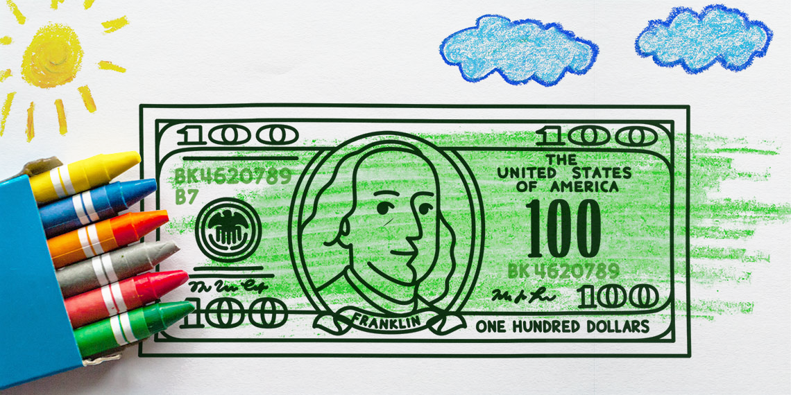

A pénz egy rendkívül hasznos dolog az ember számára, de ugyanakkora áldás, mint amekkora átok is. Az emberek túl nagy figyelmet fordítanak a pénzre, ezért rendkívül nagy hatalma van.
A pénz rengeteg szerepet tölt be. Leginkább egy általános csereeszköz, ami arra használható, hogy különböző termékeket vásároljunk meg vele. A cserekereskedelem még mindig jelen van, viszont mostmár a pénz számír a csereeszköznek. Egy tárgy árának megfelelő pénzösszeget el tudjuk cserélni az adott tárgyra. A pénznek több funkciója is van. Elsősorban csereeszköz, de ezenkívül felhasználható egyéb célokra is.

Pénzzel meg tudjuk határozni egy bizonyos terméknek, szolgáltatásnak az árát. Az áru értéke a pénzen keresztül határozódik meg. Ez azt jelenti, hogy pénz segítségével tudjuk összehasonlítani különböző termékeknek az értékeit.
A pénz fizetési eszközként szolgál akkor, amikor a pénzmozgás az árumozgástól elválik. Egy egyszerű pédával élve, ilyen az, amikor például egy hűtőszekrényt vásárolunk, és nem egyszerre, hanem részletekben fizetünk érte. A pénz ebben az esetben új pénzhelyettesítőket is termel, ami lehet például hitelpénz, bankszámlapénz.
Vannak pénznemek, amelyek konvertibilisek. Ez azt jelenti, hogy egyes pénznemek a felsorolt funkciókat a nemzetközi piacon is be tudják tölteni.
A pénz és áru ugyanabban az időben ellentétesen mozog. Ez úgy értelmezhető, hogy a pénz egy bármikor
továbbcserélhető eszköz, illetve az árupiacon a tranzakciók pénz segítsévégel mennek végbe.
Itt kerül képbe a pénz mennyisége. Abban az esetben, ha kevés pénz van, akkor az áru egy részét nem lehet
eladni. Akkor viszont, ha a pénz túl nagy mennyiségben van jelen, a kereslet nagyobb lesz a kínálatnál.
Ezt követi az infláció, azaz a pénz elértéktelenedése. Ez az árak növekedésével észlelhető.
A vagyont a legtöbben pénzben mérik, ezért a pénznek kincsképző funkciója is van.
Alkalmas arra, hogy felhalmozási eszköz legyen, ezért elvárható, hogy értéke stabil maradjon és ne csökkenjen.
Az infláció miatt ez szinte lehetetlen, pont ezért jöttek létre különböző megtakarítási formák azok számára,
akik nem szeretnék, hogy elértéktelenedjen a pénzük. A legtöbb ember már nem készpénzben takarít meg, hanem
befektet vagy értéktárgyakat vásárol.